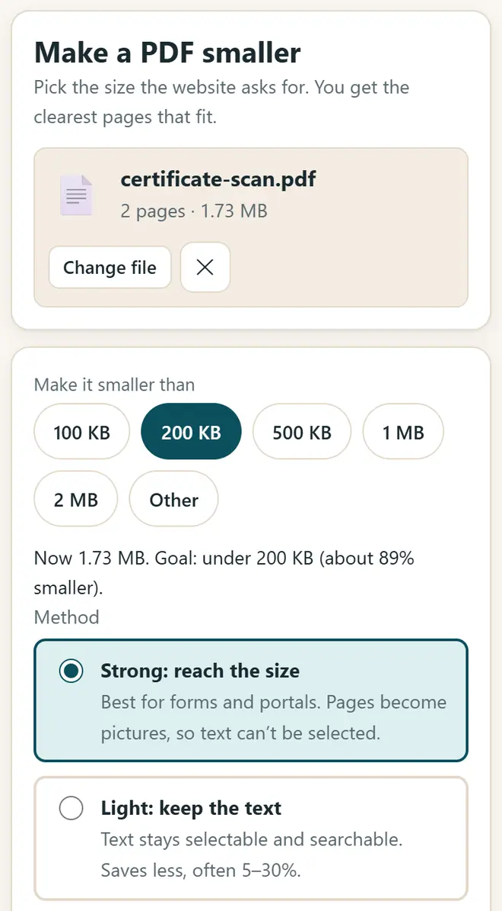
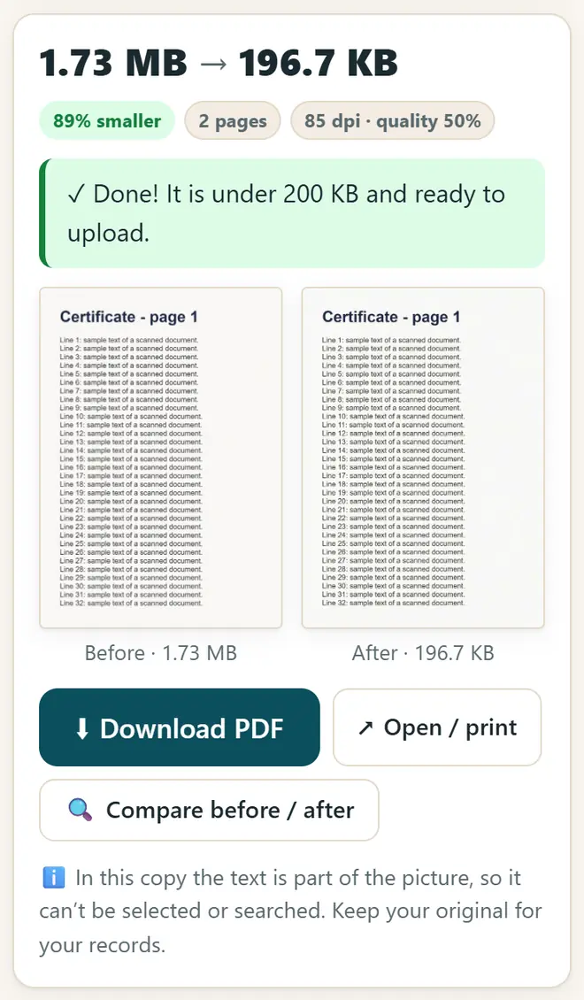

ଅନଲାଇନ୍ ଫର୍ମ ପାଇଁ PDFର ସାଇଜ୍ 100 KB କିମ୍ବା 200 KB କିପରି କରିବେ
ପରୀକ୍ଷା, ଚାକିରି ଓ ଛାତ୍ରବୃତ୍ତି ପୋର୍ଟାଲ୍ ଅନେକ ସମୟରେ କିଛି KB ବଡ଼ PDF ମଧ୍ୟ ନିଅନ୍ତି ନାହିଁ। ଫର୍ମ ଯେତିକି ସାଇଜ୍ ମାଗେ, PDFକୁ ଠିକ୍ ସେତିକି ଛୋଟ କିପରି କରିବେ, ଫୋନ୍ କିମ୍ବା କମ୍ପ୍ୟୁଟରରେ ଓ କୌଣସିଠି ଅପଲୋଡ୍ ନ କରି, ଏଠାରେ ଦେଖନ୍ତୁ।
ସଂକ୍ଷିପ୍ତ ଉତ୍ତର
PDF କମ୍ପ୍ରେସ୍ ଓ JPG ରୁ PDF ଖୋଲନ୍ତୁ, ଆପଣଙ୍କ PDF ବାଛନ୍ତୁ, ଫର୍ମରେ ମଗାଯାଇଥିବା ସାଇଜ୍ (100 KB, 200 KB, 500 KB…) ଦବାନ୍ତୁ, “ଜୋରଦାର: ସାଇଜ୍ ପର୍ଯ୍ୟନ୍ତ ପହଞ୍ଚନ୍ତୁ” ରହିବାକୁ ଦିଅନ୍ତୁ ଏବଂ “PDF ଛୋଟ କରନ୍ତୁ” ଦବାନ୍ତୁ। “ଆଗ / ପର ତୁଳନା କରନ୍ତୁ” ସହ ପୃଷ୍ଠା ଯାଞ୍ଚ କରି ଡାଉନଲୋଡ୍ କରନ୍ତୁ। ପ୍ରଥମେ ଫଟୋରୁ PDF ତିଆରି କରିବାକୁ ହେଲେ “JPG ରୁ PDF” ଟ୍ୟାବ୍ ବ୍ୟବହାର କରନ୍ତୁ।
5ଟି ପଦକ୍ଷେପରେ PDF କମ୍ପ୍ରେସ୍ କରନ୍ତୁ
-
ଆପ୍ ଖୋଲି ଆପଣଙ୍କ PDF ବାଛନ୍ତୁ
PDF କମ୍ପ୍ରେସ୍ ଓ JPG ରୁ PDF ଖୋଲନ୍ତୁ। “PDF ଛୋଟ କରନ୍ତୁ” ଟ୍ୟାବରେ “PDF ବାଛନ୍ତୁ” ଦବାଇ ଆପଣଙ୍କ ଫାଇଲ୍ ବାଛନ୍ତୁ।
-
ଫର୍ମରେ ମଗାଯାଇଥିବା ସାଇଜ୍ ବାଛନ୍ତୁ
100 KB, 200 KB, 500 KB, 1 MB କିମ୍ବା 2 MB ଦବାନ୍ତୁ, କିମ୍ବା “ଅନ୍ୟ”ରେ ନିଜ ସାଇଜ୍ ଲେଖନ୍ତୁ। ଫାଇଲ୍କୁ କେତେ ଛୋଟ ହେବାକୁ ପଡ଼ିବ, ଆପ୍ ଦେଖାଏ।

ଫର୍ମରେ ମଗାଯାଇଥିବା ସାଇଜ୍ ବାଛନ୍ତୁ: 100 KB, 200 KB, 500 KB ଇତ୍ୟାଦି। -
ପଦ୍ଧତି ବାଛନ୍ତୁ
“ଜୋରଦାର: ସାଇଜ୍ ପର୍ଯ୍ୟନ୍ତ ପହଞ୍ଚନ୍ତୁ” ନିର୍ଦ୍ଦିଷ୍ଟ ସାଇଜ୍ରେ ପହଞ୍ଚେ ଓ ଫର୍ମ ପାଇଁ ସବୁଠାରୁ ଭଲ। “ହାଲୁକା: ଲେଖା ରହିବ”ରେ ଲେଖା ସିଲେକ୍ଟ ହୋଇପାରେ, କିନ୍ତୁ ସଞ୍ଚୟ କମ୍ ହୁଏ। ସ୍କାନ୍ ପୃଷ୍ଠା ପାଇଁ କଳା-ଧଳା (ଗ୍ରେସ୍କେଲ୍)ରେ ଟିକ୍ ଦିଅନ୍ତୁ, ଫାଇଲ୍ ଆହୁରି ଛୋଟ ହେବ।
-
କମ୍ପ୍ରେସ୍ କରି ଯାଞ୍ଚ କରନ୍ତୁ
“PDF ଛୋଟ କରନ୍ତୁ” ଦବାନ୍ତୁ। ଆପ୍ ଭିନ୍ନ ଭିନ୍ନ ସେଟିଂ ଚେଷ୍ଟା କରି ସାଇଜ୍ରେ ଆସୁଥିବା ସବୁଠାରୁ ସ୍ପଷ୍ଟ ପୃଷ୍ଠା ରଖେ। “ଆଗ / ପର ତୁଳନା କରନ୍ତୁ” ସହ ଦେଖନ୍ତୁ ଲେଖା ଏବେ ବି ସହଜରେ ପଢ଼ିହେଉଛି କି ନାହିଁ।

ହୋଇଗଲା: ନୂଆ ଫାଇଲ୍ ସୀମାରୁ ଛୋଟ, ପୂର୍ବ / ପରର ତୁଳନା ସହ। -
ଡାଉନଲୋଡ୍ କରି ଫର୍ମରେ ଅପଲୋଡ୍ କରନ୍ତୁ
“PDF ଡାଉନଲୋଡ୍ କରନ୍ତୁ” ଦବାନ୍ତୁ। ଆପଣଙ୍କ ମୂଳ ଫାଇଲ୍ ମଧ୍ୟ ସାଇତି ରଖନ୍ତୁ: ଛୋଟ କପି କେବଳ ଅପଲୋଡ୍ ପାଇଁ।
ଫର୍ମ ପାଇଁ ଫଟୋ ଓ ଦସ୍ତଖତ
- “JPG ରୁ PDF” ଟ୍ୟାବରେ ଦଲିଲର ଫଟୋରୁ ଗୋଟିଏ PDF ତିଆରି କରନ୍ତୁ। ଏହା ପରିଚୟପତ୍ରର ଆଗ ଓ ପଛ ପାର୍ଶ୍ୱ ଗୋଟିଏ ପୃଷ୍ଠାରେ ମଧ୍ୟ ରଖିଦିଏ।
- ଫଟୋ କିମ୍ବା ଦସ୍ତଖତ ନିର୍ଦ୍ଦିଷ୍ଟ ପିକ୍ସେଲ୍ ଓ KBରେ ଦରକାର, ଯେପରି 20–50 KB? ଫର୍ମ ଫଟୋ ଓ ଦସ୍ତଖତ ରିସାଇଜର ବ୍ୟବହାର କରନ୍ତୁ।
- WhatsApp କିମ୍ବା ୱେବସାଇଟ୍ ପାଇଁ ଅନେକ ଫଟୋ ଛୋଟ କରିବାକୁ ଅଛି? ଇମେଜ୍ କମ୍ପ୍ରେସର ଓ ରିସାଇଜର ବ୍ୟବହାର କରନ୍ତୁ।
- ଆପଣଙ୍କ ପରୀକ୍ଷା କିମ୍ବା ଚାକିରିର ସରକାରୀ ବିଜ୍ଞପ୍ତିରେ ସାଇଜ୍ ନିୟମ ନିଶ୍ଚୟ ପଢ଼ନ୍ତୁ: ପ୍ରତ୍ୟେକ ଫର୍ମର ସୀମା ଅଲଗା।
ନୂଆ ମାଗଣା ଟୁଲ୍ ଓ ହିନ୍ଦୀରେ AI ପାଠ ପାଆନ୍ତୁ
ଆମ ଇମେଲ୍ ତାଲିକାରେ ଯୋଗ ଦିଅନ୍ତୁ: ନୂଆ ମାଗଣା ଆପ୍, ନୂଆ ଗାଇଡ୍ ଓ AI ଉପରେ ହିନ୍ଦୀ ଭିଡିଓ ପାଠର ଖବର ଆପଣ ପାଇବେ। କୌଣସି ସ୍ପାମ୍ ନାହିଁ।
କେବଳ ବୟସ୍କଙ୍କ (18+) ପାଇଁ। ଆପଣ ଯେକୌଣସି ସମୟରେ ନାମ ହଟାଇ ପାରିବେ।
ଆମେ ଏହି ଟୁଲ୍ କାହିଁକି ପରାମର୍ଶ ଦେଉ
- ସମସ୍ତଙ୍କ ପାଇଁ ମାଗଣା: ବିଜ୍ଞାପନ ନାହିଁ, ସାଇନ୍-ଅପ୍ ନାହିଁ, ପେଡ୍ ପ୍ଲାନ୍ ନାହିଁ।
- ବ୍ୟକ୍ତିଗତ: ଆପଣଙ୍କ ଫାଇଲ୍ ଓ ତଥ୍ୟ ଆପଣଙ୍କ ନିଜ ଡିଭାଇସ୍ରେ ହିଁ ରହେ।
- ଫୋନ୍, ଲାପଟପ୍ କିମ୍ବା ସ୍ମାର୍ଟବୋର୍ଡରେ ଚାଲେ, ଏବଂ ଥରେ ଖୋଲିବା ପରେ ଇଣ୍ଟରନେଟ୍ ବିନା ମଧ୍ୟ।
- ଓଡ଼ିଆ ଓ ହିନ୍ଦୀ ସମେତ 12ଟି ଭାଷାରେ।
ଭିଡିଓରୁ ଶିଖିବା ଭଲ ଲାଗେ? ଆମ YouTube ଚ୍ୟାନେଲରେ AI ଓ ମାଗଣା ଟୁଲ୍ର ହିନ୍ଦୀ ପାଠ ଦେଖନ୍ତୁ।
ବାରମ୍ବାର ପଚରାଯାଉଥିବା ପ୍ରଶ୍ନ
PDFକୁ 100 KB କିପରି କରିବେ?
PDF ବାଛନ୍ତୁ, 100 KB ଦବାନ୍ତୁ, “ଜୋରଦାର: ସାଇଜ୍ ପର୍ଯ୍ୟନ୍ତ ପହଞ୍ଚନ୍ତୁ” ରହିବାକୁ ଦିଅନ୍ତୁ ଏବଂ “PDF ଛୋଟ କରନ୍ତୁ” ଦବାନ୍ତୁ। ପୃଷ୍ଠାରେ ବହୁତ ଛୋଟ ଅକ୍ଷର ଥିଲେ 200 KB କିମ୍ବା ଗ୍ରେସ୍କେଲ୍ ଚେଷ୍ଟା କରନ୍ତୁ, କିମ୍ବା PDFକୁ ଭାଗ ଭାଗ କରନ୍ତୁ।
ଗୁଣବତ୍ତା କ'ଣ ଖରାପ ହେବ?
ଶକ୍ତ କମ୍ପ୍ରେସନ୍ ପୃଷ୍ଠାକୁ ଛବି କରିଦିଏ, ତେଣୁ ଲେଖା ସିଲେକ୍ଟ ହୁଏ ନାହିଁ, କିନ୍ତୁ ଆପ୍ ସାଇଜ୍ରେ ଆସୁଥିବା ସବୁଠାରୁ ସ୍ପଷ୍ଟ ଗୁଣବତ୍ତା ବାଛେ। ଅପଲୋଡ୍ ପୂର୍ବରୁ “ଆଗ / ପର ତୁଳନା କରନ୍ତୁ” ସହ ଯାଞ୍ଚ କରନ୍ତୁ।
ମୋ ଦଲିଲ କ'ଣ କୌଣସିଠି ଅପଲୋଡ୍ ହୁଏ?
ନା। PDF ଆପଣଙ୍କ ବ୍ରାଉଜର ଭିତରେ ହିଁ ବଦଳାଯାଏ ଏବଂ ଆପଣଙ୍କ ଡିଭାଇସ୍ ବାହାରକୁ ଯାଏ ନାହିଁ। ତେଣୁ ମାର୍କସିଟ୍, ଆଧାର ଓ ପ୍ରମାଣପତ୍ର ପାଇଁ ଏହା ସୁରକ୍ଷିତ।
JPG ଫଟୋରୁ PDF କିପରି ତିଆରି କରିବେ?
“JPG ରୁ PDF” ଟ୍ୟାବ୍ ଖୋଲନ୍ତୁ, ଫଟୋ ବାଛନ୍ତୁ, କ୍ରମ ଓ ପୃଷ୍ଠା ସାଇଜ୍ ସ୍ଥିର କରନ୍ତୁ, ଏବଂ “PDF ତିଆରି କରନ୍ତୁ” ଦବାନ୍ତୁ। ସାଇଜ୍ ସୀମା ମଧ୍ୟ ରଖିପାରିବେ, ଯେପରି 200 KBରୁ କମ୍।
ଏହା କ'ଣ ମୋବାଇଲ୍ରେ ଚାଲେ?
ହଁ, Androidର Chromeରେ ଓ iPhoneର Safariରେ। PDF ଟୁଲ୍ ଲୋଡ୍ କରିବାକୁ ପ୍ରଥମଥର ଇଣ୍ଟରନେଟ୍ ଦରକାର, ତା'ପରେ ଅଫଲାଇନ୍ ଚାଲେ।
କାମରେ ଲାଗିଲା?
କୌଣସି ବନ୍ଧୁ, ସହକର୍ମୀ କିମ୍ବା ଆପଣଙ୍କ ସ୍କୁଲର WhatsApp ଗ୍ରୁପ୍କୁ ପଠାନ୍ତୁ।